Template
Template is the only character in LF2 who does not appear as an enemy in Stage mode. It is also the only character not locked behind password, but unselectable by Random at the same time.
It is expected as a sample character and is approximately as strong as Bandit.
| In Random | Locked by password | Stage mode | Battle mode |
|---|---|---|---|
| No | No | No appearance | No appearance |
Stats
| Walk | Run | Jump | Dash | Roll | |
|---|---|---|---|---|---|
| X | 4 | 8 | 8 | 15 | 7 |
| Z | 2 | 1.3 | 3 | 3.75 | 0 |
| Y | 16.3 | 11 | |||
| TU | 11 |
Basic moves
| Startup | Active | Recovery | Fall | Damage | Properties | |
|---|---|---|---|---|---|---|
| 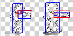 | 2 | 4 | 0 | 20 | 20 | None |
Stuns in 3 hits. Due to hitbox lasting until end of move, if Template damages enemy after first tu of active hitbox, its next punch can hit earlier.
| (At stunned) | Startup | Active | Recovery | Fall | Damage | Properties |
|---|---|---|---|---|---|---|
| 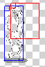 | 5 | 5 | 0 | 70 | 50 | None |
Knocks enemy up. Has frame advantage if enemy flips. Has no recovery time, allowing instant dash.
| Startup | Active | Recovery | Fall | Damage | Properties | |
|---|---|---|---|---|---|---|
 | 5 | 6 | 4 | 70 | 20 | None |
Poor startup and hits single enemy, possibly the worst runA in game. Only usable as read and overshadowed by runWA.
| Startup | Active | Recovery | Fall | Damage | Properties | |
|---|---|---|---|---|---|---|
 | 3 | 21 | 0 | 70 | 70 | None |
The only engage/disengage tool without weapon. Has an absurd active but is only fair among all characters.
| Startup | Active | Recovery | Fall | Damage | Properties | |
|---|---|---|---|---|---|---|
| 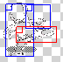 | 2 | 7 | 0 | 20 | 35 | None |
Very similar to Bandit jumpA. Can abuse to stunlock single enemy. Not viable as engage.
Weapon moves
| Startup | Active | Recovery | |
|---|---|---|---|
| 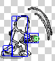 | 5 | 3 | 3 |
Hitbox is consistent despite deceiving sprite.
| Startup | Active | Recovery | |
|---|---|---|---|
| 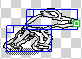 | 5 | 6 | 4 |
Worse than Bandit due to passive moving forward. Double hit on block 1st frame hit.
| Startup | Active | Recovery | |
|---|---|---|---|
| 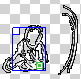 | 5 | 8 | 0 |
Worse than Bandit in all aspects, has no rear hitbox. Deceptive sprite, only hits low.
| Startup | Active | Recovery | |
|---|---|---|---|
| 4 | 8 | 0 |
Worse than Bandit in all aspects, has no rear hitbox. Deceptive sprite, only hits low.
| 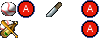 | Startup | Recovery | X-speed | Z-Speed | Y-Speed |
|---|---|---|---|---|---|
| 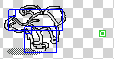 | 8 | 10 | 14 | 3 | 4 |
Bad minion-rank duration. Short range makes it only usable as read.
| Startup | Recovery | X-speed | Z-Speed | Y-Speed | |
|---|---|---|---|---|---|
 | 8 | 10 | 12 | 3 | -8 |
Bad minion-rank duration. Short range makes it only usable as read.
| Startup | Recovery | X-speed | Z-Speed | Y-Speed | |
|---|---|---|---|---|---|
| 8 | 10 | 12 | 3 | -8 |
Drink, baseball dash throws at point-blank range. Land cancels recovery. Cannot reverse dash throw.
| Startup | Recovery | X-speed | Z-Speed | Y-Speed | |
|---|---|---|---|---|---|
| 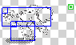 | 6 | 11 | 8 | 4 | 2 |
Bad minion-rank duration. Short range makes it only usable as read.
Special moves
Template has no special moves.
Grab moves
 | Startup | Active | Recovery | Damage | Properties |
|---|---|---|---|---|---|
| 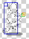 | 5 | 0 | 4 | 15 | None |
Low-tier grab attack. Can chain at most 5 times, or 4 times plus throw.
| Startup | Active | Recovery | Damage | Properties |
|---|---|---|---|---|---|
| 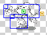 | 9 | 0 | 11 | 30 | Full dark HP damage |
Enemy is thrown dealing 30 any-team damage. Bad minion-rank duration. Short range makes it only usable as read.